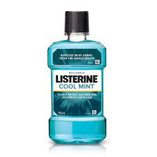

| |
| self love | self Care |
Skincare, facial makeup, hair nourishment, and model hair cutting are the most important nourishing activities of a beauty
A beauty parlour is a service-oriented establishment in which women receive treatment to increase their beauty.
| | |
| self love | self Care |
Skincare, facial makeup, hair nourishment, and model hair cutting are the most important nourishing activities of a beauty
beauty parlor is a place where people can go to have beauty treatments, for example to have their hair, nails, or makeup done..

|

|
toner | SunScreen | Facewash | Moisturizer |
Facial cleansers play an important role in your skincare routine. Face washes are designed to remove impurities, germs, dirt and makeup that can irritate the skin.
Proper body care is essential to maintaining good health and well-being, both physically and emotionally Taking care of your skin can help prevent damage from the environment,
| soap | wash | scrub | lotion |
Body lotion is moisturiser designed to use all over your body. In much the same way we moisturise our face every day, our body benefits from a daily dose of hydration.
Every basic haircare routine contains some important steps: cleansing, conditioning, moisturising, detangling, styling and treatment.

|
 |
shampoo | conditionzer | hairserum | hairoil |
The frequency of these steps will depend on your hair type, lifestyle and preferences.
Adults: Should be taken 5 ml Mouthcare with 10 ml - 15 ml water and gurgle for 30 seconds of morning & bedtime daily
|  | paste | brush | mouthwash | floss |
Children: Should be taken 2.5 ml Mouthcare with 10 ml water and gurgle for 30 seconds of morning & bedtime daily.
In addition to pain relief by reducing swelling and inflammation, air compression massage also helps our bodies increase endorphins. Endorphins are hormones that help reduce stress levels and alleviate pain

|
 |
Buzzfeed massager | neem woodenface massager | foot massager | air compression leg messager |
We suggest using the leg compression massager on a low or medium intensity setting, for 20-30 minutes per session. For the best results and recovery, do not use the RecoverMax for more than an hour at a time.